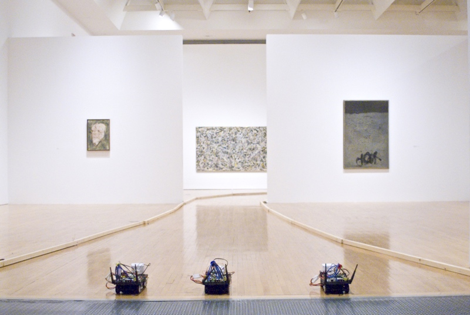
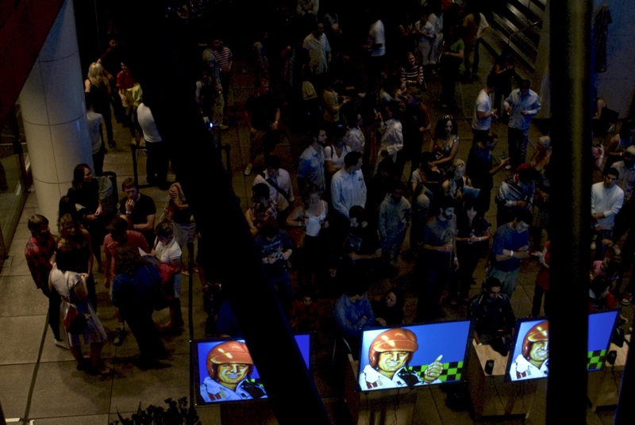
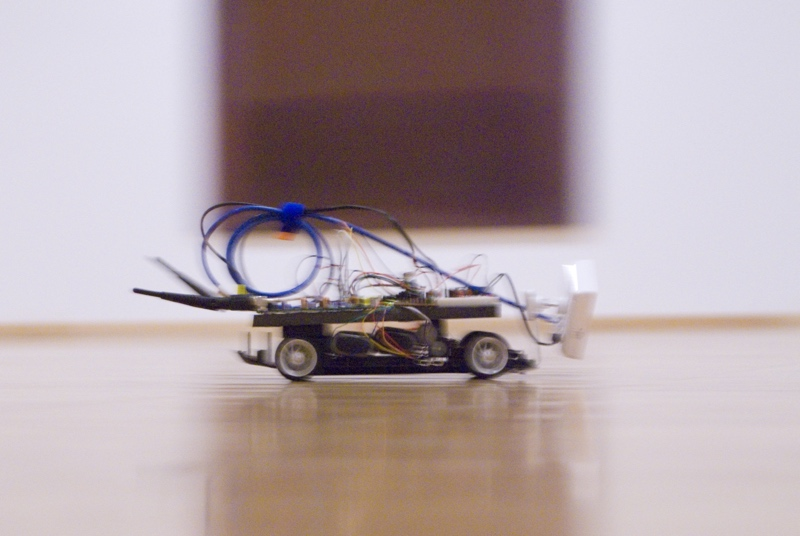
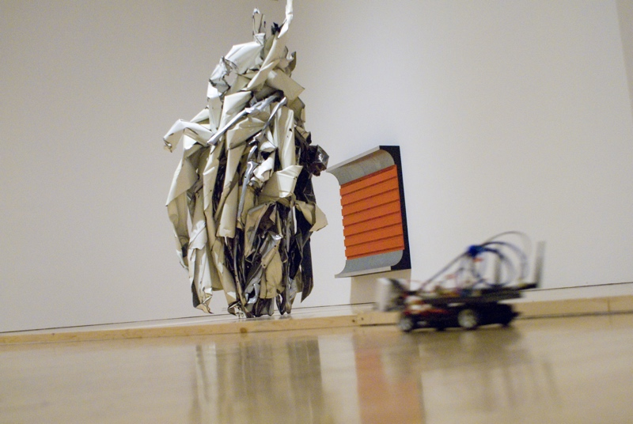
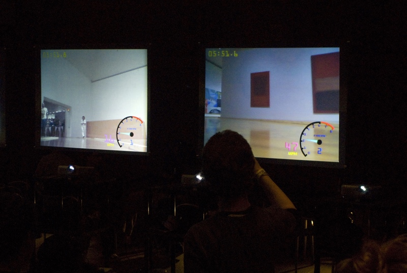

In MOCA Grand Prix, Knifeandfork (Brian House and Sue Huang) invites participants to race remote-control cars through MOCA's permanent collection exhibition. Using mounted cameras, each Wifi-enabled car is driven remotely through a video game interface that shows the car's point of view. Through the lens of 1980s American gaming culture, this project offers an alternative perspective on the museum. Awards are presented for the fastest times of the evening.





MOCA Grand Prix
w/ Sue Huang
Museum of Contemporary Art, Los Angeles
May 7, 2009
w/ Sue Huang
Museum of Contemporary Art, Los Angeles
May 7, 2009
Production assistance:
Meghan Grebling, Matt Miller, Ronald Vega, Alanna Yu, Jay Yan.
Video documentation and editing:
Alex MacInnis.
Photo documentation:
Patrick Miller.
DJ:
Wendy Yao.
Blog:
Guthrie Lonergan.
Thanks:
Aandrea Stang, Meghan Grebing, MOCA Think Tank and staff.